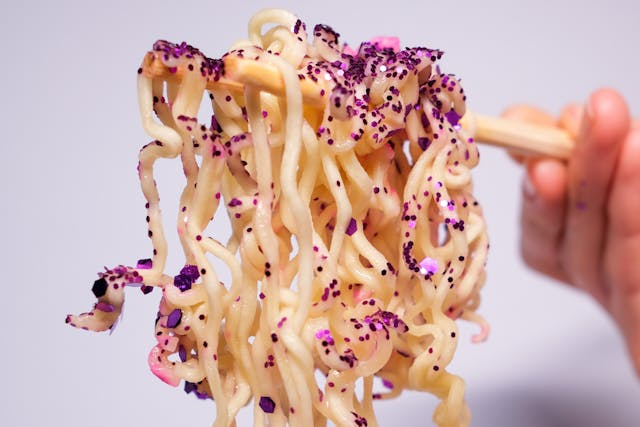

Instant Noodle

Description
It might seem like your ordinary ramen but the extra glitter sprinkled on top
gives it an extra twist and makes it classier than ever.
Ingredients
- Instant noodle, deep fried, 1 piece
- MSG, 5g
- Edible glitter, a copious amount
- Seasoning
- Boiled water, 98˚C, 500ml
Steps
- Boil water to 98˚C. If you don't know how to boil water, consult your nearest parent.
- While the water is boiling, prepare the glitter.
- Get a pot and pour water inside, then add your instant noodle.
- Cook your noodle to desired hardness, fish out and drain.
-
It's important to refrain from sprinkling MSG and glitter until the very last moment
to preserve the umaminess and original flavor of the best ingredients nature has to offer.
Home